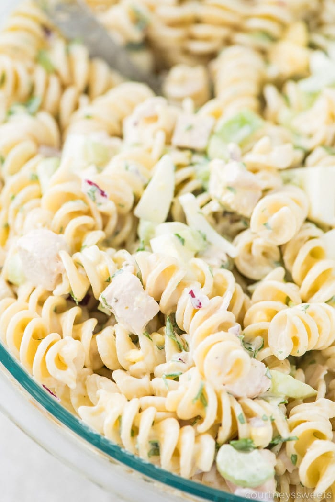

Lemon Pepper Chicken Pasta Salad

This is an easy, quick, and tasty meal that I grew up on. This should make about 6-7 servings and is good hot or cold.
- 1 lb rotini pasta cooked, can still be hot from draining
- 2 1b fully cooked pulled chicken, can use drained canned diced chicken
- 2 stalks celery finely chopped
- 1/8 cup fine chopped red or sweet onion
- 1/8 cup fresh parsley chopped
- 3/4-1 cup Dukes Mayo or homemade mayo
- 2 lemons juiced, if you squeeze before pasta is done toss the skins in the pasta water
- 3 Tbs Lemon pepper seasoning
- Salt and pepper to taste
- Mix all of the above items, then let set to let the flavor develop make sure you mix well to avoid seasoning pockets.
Home